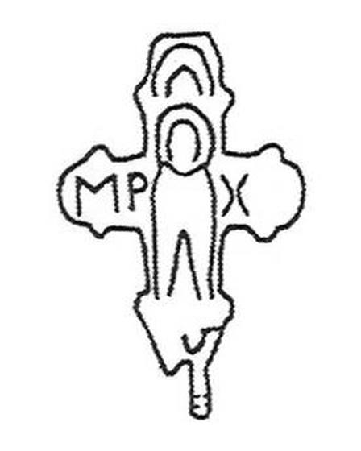

Catalog › CE-0538 · IAH2007-2-6
Valvă inferioară de encolpion miniatural, Zalișcichi (Рис. 2, 6)
nedatat · Zalișcichi, regiunea Ternopil, raionul Zalișcichi, Ucraina · Muzeul de Studii Locale Zalișcichi (Заліщицький краєзнавчий музей, ЗКМ), inv. ЗКМ № 7729
single valve of a reliquary cross; nedatat; found at Zalișcichi, regiunea Ternopil, raionul Zalișcichi, Ucraina; kept at Muzeul de Studii Locale Zalișcichi (Заліщицький краєзнавчий музей, ЗКМ).


Identificare
- Categorie
- Valvă izolată
- Tehnică
- Turnare în relief
- Dimensiuni
- Î 36 × L 26 mm
Iconografie
- Descriere revers
- Valva inferioară a unui encolpion miniatural cu brațe inegale, capete rotunjite și «lacrimi» convenționale. Imaginea Maicii Domnului în relief scăzut este schematică; pe fundalul ei, în relief mai înalt, se detașează capul și marginile maforionului, care formează în centru o adâncitură. În medalioanele orizontale se citesc literele «МР» și «Х».
- Inscripții
- МР, Х
Datare și atribuire
- Datare
- nedatat
Descoperire
- Localitate
- Zalișcichi
- Regiune
- regiunea Ternopil, raionul Zalișcichi
- Țară
- Ucraina
- Context
- Necunoscut
- Coordonate
- 48.6536° N, 25.7311° E
- Precizia locului
- Doar localitatea
Păstrare și referințe
- Colecție
- Muzeul de Studii Locale Zalișcichi (Заліщицький краєзнавчий музей, ЗКМ)
- Nr. inventar
- ЗКМ № 7729
- Bibliografie
- М. Ягодинська, Нові культові речі з давньоруських пам’яток Західного Поділля, în „Матеріали і дослідження з археології Прикарпаття і Волині”, 11, 2007, p. 346–357 [Ягодинська 2007], p. 349, Рис. 2, 6, reprodusă la Рис. 2, 6 (p. 350).
- Figura
- Рис. 2, 6
- Planșe
- Ягодинська 2007, p. 350
- Observații
- Dimensiuni: 4,1×2,6 cm cu ureche, 3,6×2,6 cm fără ureche. Valva a fost găsită împreună cu ceramică rusă veche din sec. XII–XIII. Олійник, Олійник 2008 (fig. 1, 1) descriu în aceiași termeni o valvă din Zalișcichi (ЗРККМ А 1677, 3,7×2,6 cm fără ureche); sursele nu afirmă că ar fi aceeași piesă (vezi fișa OLI-1). Material: aliaj de cupru, fără precizare suplimentară. Coordonate: ale localității (aproximative), nu date în sursă.
Citare: Corpus Encolpiorum, CE-0538, Valvă inferioară de encolpion miniatural, Zalișcichi (Рис. 2, 6), --root/piese/IAH2007-2-6/ (accesat 2026-10-17).